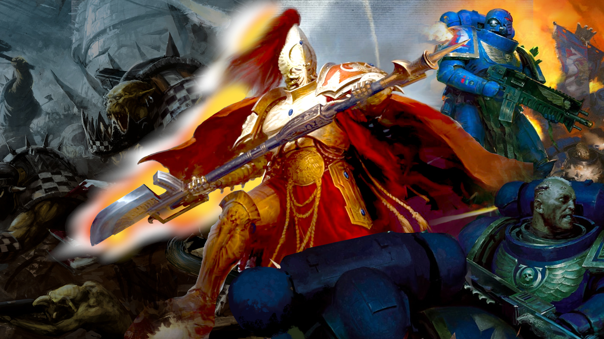
Warhammer 40k factions - all 40k armies and races explained
To put things mildly, there are a lot of Warhammer 40k factions, races, and armies warring across the grimdark far future of Games Workshop's flagship sci-fi wargame. Over 20 of them, in fact, and that's only counting the 'main' 40k armies that get their own fully fledged codex rulebooks every edition. Here we'll break down the core Warhammer 40,000 factions list, with details about each army.
As well as the more developed armies, there are at least another 13 offshoot factions (mostly specialized Space Marine chapters) with their own models, and depending on the edition of the game some or all of them get their own supplement rulebooks.
In this guide we'll mainly focus on the full-blown tabletop 40k armies to help you find the perfect one for you. But we've also included some information on the minor factions who don't get their own rules - click that link to skip to them.
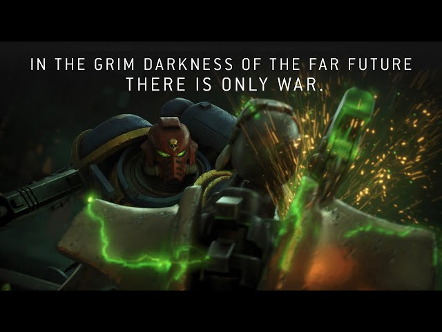
Warhammer 40k super-factions
The many armies of the 41st millennium are roughly divided into three Warhammer 40k super-factions: the Imperium of Man, the Warhammer 40k Chaos factions, and the galaxy's various species of aliens - known as the Warhammer 40k Xenos factions.
Normally, Imperium armies can only team up with other Imperials; Chaos with Chaos; and most Xenos rarely make common cause with anyone. To dive deeper into the lore of each 'super-faction', click those links above to read our detailed guides for each.
If you're getting into the game for the first time, learning about the factions is a great start! But be aware: we're expecting Games Workshop to release a brand new edition of Warhammer 40,000 in Summer 2026 which will update the rules and affect every army - read our complete Warhammer 40k 11th edition guide for all the details you need.
It's worth bookmarking our Warhammer 40k Codex release date tracker too, so you'll be the first to know when your chosen faction's next rulebook is coming out. But, if you just want a brief overview of each of the galaxy's fighting forces, read on.
- Sisters of Battle
- Adeptus Custodes
- Adeptus Mechanicus
- Astra Militarum
- Space Marines
- Black Templars
- Dark Angels
- Blood Angels
- Space Wolves
- Deathwatch
- Grey Knights
- Imperial Knights
- Chaos Space Marines
- Emperor's Children
- Death Guard
- Thousand Sons
- Chaos Daemons
- Chaos Knights
- Orks
- Aeldari
- Asuryani
- Harlequins
- Ynnari
- Drukhari
- Necrons
- Tyranids
- T'au Empire
- Genestealer Cults
- Leagues of Votann
- Imperial Agents
- The Inquisition
- Imperial Assassins
- Adeptus Arbites
- Imperial Navy
- Minor factions
- New faction predictions
Sisters of Battle
The Sisters of Battle (a.k.a. Adepta Sororitas) are the militant wing of the 'Ecclesiarchy' - the Imperium's galaxy-wide state religion, fierce worshippers of the Emperor of Mankind on his Golden Throne on Terra (40k's far-future earth).
Their lore origins are rather amusing: after a period of tremendous religious upheaval known as the Age of Apostasy, the Imperial Faith was banned from having its own force of 'men under arms' (though that has never stopped it from giving guns and funds to enterprising crusades of the citizens militia). However, this law didn't rule out an all-female army of bloodthirsty zealots, equipped with deadly weapons and power-armored corsets, ready to make the Emperor's enemies whimper.
How do they play?
On the 10th edition Warhammer 40k tabletop, the Sisters of Battle are a powerful force that relies on careful maneuvering for victory. They mostly specialize in close range weaponry, and they're fairly fragile except for their (admittedly very useful) power armor. Their 'Miracle Dice' allow you to store up useful dice results, and whip them out later in the game to get out of tight spots.
That said, they aren't totally without teeth in the combat phase - they have a lot of fast and hard hitting melee infantry and walkers. But they're glass cannons (or chainswords), so while these elements can storm objectives, they can't be relied on to hold them.
You can get a complete Adepta Sororitas lowdown in our full Sisters of Battle army guide.
Adeptus Custodes
The gold-armored giants of the Adeptus Custodes are the personal bodyguard of the Emperor of Mankind - bigger, stronger, smarter, and deadlier than even the Space Marines, each one a masterwork of genetic alchemistry.
Originally there were 10,000 of them, but in the 41st millennium this elite force has been whittled down - though given their secretive nature, it's hard to say just how many remain. Luckily, each individual 'Custodian' is a fighting force unequaled by almost any other being in the galaxy - meaning you'll quite often see a tabletop army of Adeptus Custodes that's just a handful of miniatures strong.
Incidentally, they're also the favored army of everyone's favorite famous fan of Warhammer 40k Henry Cavill - praise be!
How do they play?
Don't be fooled by their low numbers. On the 40k tabletop, Custodes units are few, but uncommonly tough and very deadly in melee.
With the most powerful defensive wargear in the Imperium, it takes incredible firepower to take down a single Custodian, and if they're able to get close, the Custodes' exceptional offensive abilities and unique weaponry will tear through pretty much anything on the table.
This gives them a very swingy playstyle. A few failed invulnerable saves will see you lose lots of incredibly valuable models. Pass those saves, and your opponent will look on in dismay! Just remember, you've got to be bold - the Custodes don't have the firepower to win a shooting match, and they can only contest objectives by ruthlessly culling the enemy.
To learn more about the Emperor's golden boys, read our complete Adeptus Custodes army guide.
Adeptus Mechanicus
Originating on Mars and allied with the Imperium of Man, the Adeptus Mechanicus is a galaxy-spanning cult made up of technology-worshipping cyborgs, cybernetic 'Servitor' constructs, and legions of vast, ancient war machines (including the mighty Warhammer 40k Titans).
Led by a cadre of arcane Tech-priests (whose bodies are in various stages of conversion from flesh-sack to entirely synthetic metal and silicon avatar) the Adeptus Mechanicus maintains the Imperium's galactic stocks of spaceships, tanks, aircraft, weapons, and armor. The AdMech's own armies are made up of a mixture of cyborg Skitarii warriors, robotic battle automata, and high-tech war machines.
How do they play?
On the tabletop, AdMech armies are as reconfigurable as a swiss army knife, but you need to deploy the right tool at the right moment to make the most of them - and you'll need to stack buffs to get that blade as sharp as possible! Those new to modelling and painting miniatures should also beware: these guys can be spindly and difficult to put together, with many nooks and crannies that are challenging to paint well.
To learn more about how the AdMech play, check out our interview with Archmagos Richard Siegler, who used the scions of Mars to claim victory in the 2025 World Championships of Warhammer 40k.
Or, if you want an excellent introduction to the lore and feel of the Adeptus Mechanicus, consider giving the videogame Warhammer 40k Mechanicus a play; it's a fantastic game like XCOM in which a team of meddling Tech Priests go on a "research" expedition into a Necron tomb-world, with predictable results.
Astra Militarum
The Astra Militarum - also called Imperial Guard - is the Imperium's standing army: a mind-bogglingly huge force of (mostly) human soldiers, tanks, and aircraft drawn from Imperial worlds all over the galaxy. They're the first line of defence (and attack) in humanity's never-ending war for survival and domination.
The Guard fight in gigantic formations of lightly armed and armored infantry, massed artillery, and mass-produced tanks made as cheaply as possible from ancient blueprints nobody even understands any more. Wavering troops are kept in line by trigger-happy, Soviet-inspired 'Commissars' who, at critical points during games, can keep soldiers from running by shooting their own troops. Dark stuff.
How do they play?
On the tabletop, Guard armies customarily field bucketfuls of infantry squads, with company commanders expecting the vast majority to die before victory is achieved - in 10th edition, they have a variety of tools that let you bring destroyed Guard squads back onto the battlefield as reinforcements.
There's a lot of satisfying gameplay to be had in issuing various Orders to your units, setting them up for different tactical roles as you charge ahead. Remember, you can kill anything if you shoot enough lasguns at it.
And then there are the tanks! Guard infantry might be cheap and quite vulnerable, but their armored forces pack a punch. With masses of bodies on the table you can strike a decisive claim on objectives, while the big guns keep on firing.
To fully enlist in the Emperor's human forces, dive into our complete Astra Militarum army guide.
Space Marines
The poster boys for both the Imperium and Warhammer 40k as a whole - you already know who the Space Marines are. Eight-foot-tall genetically enhanced super-soldiers, the Space Marines - a.k.a. Adeptus Astartes - march into battle in massive suits of power armor, adorned with the colors and heraldry of one of hundreds of proud 'Chapters'.
The Emperor created the Space Marines over 10,000 years before the current 40k era, intending them to be his ultimate force to conquer the entire galaxy. That didn't quite go to plan - the Horus Heresy civil war was something of a blip - but they're now stronger than ever, reinforced with upgraded Primaris Space Marine variants, and they form the tip of the spear in all humanity's wars, paving the way for the far more numerous Astra Militarum troops to land and do all the donkey work of conquest.
How do they play?
On the tabletop, Space Marines are generally known as the most accessible and forgiving faction to collect and play. Their rules are simple, they have lots of units to choose from, and they're all relatively strong in both offensive and defensive roles, making this a very flexible army indeed.
You can play a Space Marine army that's all about long-range firepower from tanks and heavy weapons; you can make a quick, mobile force of squads in roving transports with bike escorts; you can make an 'alpha strike' army relying on elite teams of heavily armored Terminators teleporting directly onto key areas - the possibilities are (nearly) endless.
Plus, with hundreds of unique chapters to choose from, it's easy to create an army with the lore and looks you want. Space Marines have come in the Warhammer 40k starter set for every edition of the game, and it's easy to see why.
For fuller info on building your own regular Adeptus Astartes army, read our complete guide to Warhammer 40k Space Marines. However, as the setting's poster boys, Space Marines have an ever growing range of distinctive sub-factions based on specific chapters, with their own codex supplement rulebooks. We'll cover the greatest of these next.
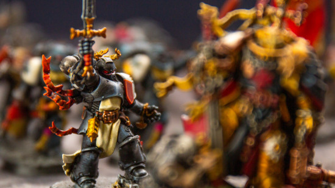
Black Templars
An offshoot of the original Imperial Fists legion and its doughty primarch Rogal Dorn, the Black Templars are a chapter of ultra-religious, Emperor worshipping zealots who've taken the whole 'medieval knights' vibe way too far. They wear black plate with white shoulder guards, and their badge is the pointed black cross worn by the real-life, 12th century crusader order the Knights of St. John (a.k.a. Knights Hospitaller).
Led in their endless, righteously bloodthirsty crusades by the austere, gold-armored High Marshal Helbrecht, the Templars are almost certainly the biggest chapter of Space Marines in the galaxy. With no fixed abode and no shortage of heretics to smite, Black Templar crusade fleets tour the stars constantly, recruiting an endless stream of neophytes into their ranks to take knightly oaths, don a goofy bowl cut, and die for the God Emperor.
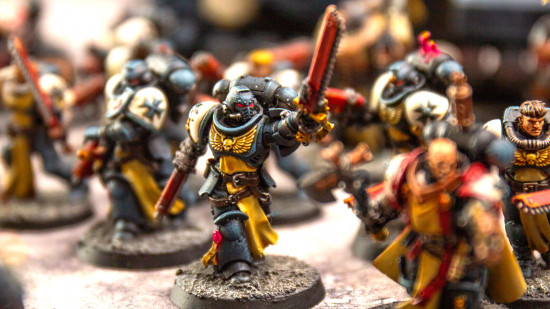
How do they play?
Since their triumphant return to the Warhammer 40,000 tabletop game in 2021, the ultra aggressive, melee focused Black Templars have become one of the most popular (and competitive) armies in the game.
This army is all about unbridled, faith-driven aggression, pushing your powerful close combat characters, elite Sword Brethren, and Crusader Squads up the field into melee fights as quickly as possible.
Depending on the opponent, you can fine tune your strategy by choosing one of four 'Templar Vows' to apply a specific upgrade to your entire army, making them more survivable, better at fighting, better at cleaving through armor, or better at killing psykers. Whatever the situation dictates is best for smiting the Emperor's foes, such is your vow.
For more on the Sons of Sigismund, read our editor's conflicted love letter to his own Black Templars.
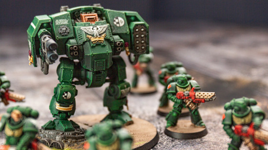
Dark Angels
Still among the most prominent chapters of Space Marines in the Imperium, the Dark Angels are an ever mysterious force that traces its lineage back to the original 1st Legion, a true knightly order based on the now dead planet of Caliban, and its primarch Lion El Jonson, who was long thought lost, but has recently returned to the Warhammer 40k game and lore.
The Dark Angels' defining traits are secrecy and grim honor. See, part of the original legion turned traitor during the Horus Heresy war - culminating in a duel between Lion El Jonson and his second-in-command Luther, and the destruction of the Dark Angels' home planet - and the loyalist Dark Angels have spent the ten millennia since ruthlessly hunting down and killing every 'fallen' legionary that sided with Luther, to clear their name.
With their returned primarch still marooned beyond the near impassable warp storm known as the Great Rift, the chapter is led by Supreme Grand Master Azrael, a handful of other Grand Masters, and the inscrutable Lord Cypher.
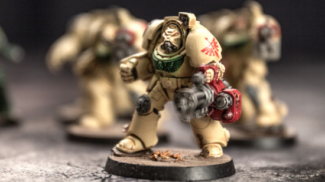
How do they play?
The Dark Angels have a penchant for warfare in a pseudo-medieval style. On the tabletop, they play out as a flexible strategic balance between taking and holding objectives using your heavily armed, bone armored Deathwing terminators (the foot knights in shining armor); fast moving cavalry charges from the black armored, motorbike riding Ravenwing (the noble, chivalric horsemen) and fire support from your regular, green-clad marines (the men-at-arms).
In practise, in 10th edition, you'll find most Dark Angels armies revolve around their strongest unit: the Deathwing Knights. Extra durable, extremely punchy elite melee squads, these are far and away the best Terminators in the game right now, and with the right buffs can tear through any enemy unit you throw them at.
The most powerful strategy tends to be to get three squads of these beasts onto objectives near your opponent, and keep them there, fighting off all comers - while powerful ranged units like Eradicators and Desolation Squads help shoot down any incoming enemies that might have a chance at shaking your Knights' choke hold on the key points. Mysterious it ain't - but you don't see triumphant Dark Angels players complaining.
Read our complete Dark Angels guide for more info.
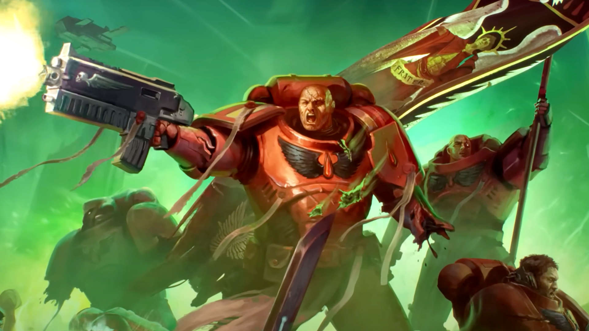
Blood Angels
The Blood Angels are at once the paragon of the Space Marine ideal, and the very worst of what they can become. They present themselves to the Imperium at large with an angelic demeanour, unflinchingly loyal servants of the Imperium. Outside battle they devote themselves to the fine arts, so their warships and their fortress monastery on the desert world of Baal are monuments to Imperial grandeur.
However, they are afflicted by two terrible curses. The first is the red thirst, a lifelong hunger for the blood of living creatures that can only be held at bay, never fully sated.
The second is the legacy of their dead Primarch Sanguinius, slain at the hands of the arch-traitor Horus. Sanguinius' death sent psychic ripples through his gene-sons, and to this day it is the terrible fate of many Blood Angels to be afflicted by the Black Rage, deluded by maddening visions of their Primarch's murder at the hands of his once-brother and driven into a state of unrelenting berserker rage.
How do they play?
While the Blood Angels have full access to the Space Marine arsenal, they are primarily a melee army. Their elite units include the golden Sanguinary Guard, and the black armored berserkers of the Death Company who have fallen to the Black Rage. They're particularly fond of jump pack assaults on account of the whole "flying angel" aesthetic.
You can learn more about their history and lore in our complete guide to the Blood Angels.
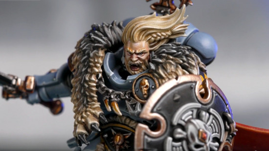
Space Wolves
Born to the feral death world of Fenris, the Space Wolves are among the most belligerent, boastful, and proud of the loyal Space Marines. They have a well earned reputation for ferocity, recklessness, and tenacious grit, fighting tooth and claw in the name of the 'All-Father'.
If you know your Norse myths, you may have noticed that the Space Wolves' name for the Emperor is also the real world title for Odin, king of the Norse Gods. They are very Viking coded, with wild hair, braided beards, runic charms, furs, and axes. And they've also got a fondness for wolves.
Over the years their model range has shifted its emphasis between the different themes of "Vikings in space" and "guys who really like wolves", with some very silly moments along the way - there's no better example of this than the Thunderwolf Cavalry, who are Space Marines riding on giant wolves. It's very silly, but in the same way that the cover art for a metal album is very silly - basically, it gets a pass.
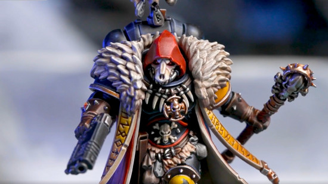
How do they play?
While Space Wolves have access to the full Space Marine arsenal, they rarely use it: they're much more focused on melee combat. They have many unique melee units, from the hot headed Blood Claws to the battle-hardened Wolf Guard Headtakers.
Their Detachments are all focused on different Sagas that the skjalds might orate in their great chapter-fortress, the Fang. These provide a force wide bonus based on the theme of the Saga - and, if you can complete certain actions, your Wolves will become even more powerful as they complete their own saga.
You can learn more in our complete guide to the lore of the Space Wolves.
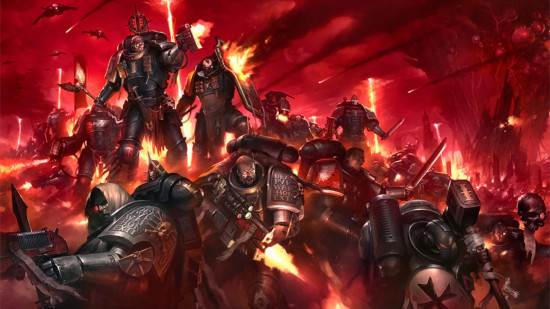
Deathwatch
The Deathwatch are not a chapter of Space Marines in the conventional sense - every member of the Deathwatch is a veteran of another Space Marine chapter serving temporarily in this specialist and secretive taskforce. Its mission is to seek out and destroy the most lethal alien threats against the Imperium with pinpoint strikes and lightning raids. It serves as the militant wing of the Ordo Xenos of the Inquisition, and makes exclusive use of otherwise prohibited xenos technologies.
The Deathwatch have rather odd rules on the tabletop. Some Deathwatch units can be fielded in an Imperial Agents army, or taken as allies in other Imperial forces, representing their role as specialists seconded to important missions. There is also an Index supplement that allows you to field a full Deathwatch Space Marine army, with unique army rules and unit choices. To learn more about this most elite of all Space Marine armies, check out our interview with Deathwatch expert Emil Söderholm.
Grey Knights
The Grey Knights are a secret order of Space Marines based on Titan (Saturn's largest moon) whose sole job is to hunt down and destroy the daemons of chaos. Specially selected as children from across the Imperium, every Grey Knight is a psyker, with a battery of psychic abilities for killing enemies, defending themselves, and banishing daemons back to hell.
How do they play?
In tabletop Warhammer 40k, the Grey Knights are a visually striking force of bluish-silver marines, garbed with knightly accoutrements, heraldry, and various cool-looking anti-daemon doodads.
Given their elite nature, you'll be fighting with a smaller force than other armies - perhaps just a handful of Grey Knight Terminators and Paladins - but if you make clever use of their prodigious psychic abilities to keep your squads alive and make enemies dead, you'll find them a deceptively deadly army.
If you want an excellent introduction to the lore and feel of the Grey Knights, consider giving Chaos Gate: Daemonhunters a play; it's a fantastic game like XCOM in which your squad of extremely tough Grey Knights kick seven shades of snot out of the corrupt forces of Nurgle.
If you're set on joining the psychic Knights of Titan, check out our in-depth Grey Knights army guide.
Imperial Knights
Towering, two-legged war machines piloted by a single, highly trained aristocrat, the Imperial Knights are technically the most elite fighting force in the galaxy - purely because hardly anyone knows how to make more of these ancient mechs.
Thudding into battle on massive metal legs, bedecked in preposterous amounts of chivalric heraldry, pennants, and emblems, the Imperial Knights are quite literally medieval knights, except riding 40-foot-high robot battlesuits instead of horses. Armed with weapons ranging from super-powered long range lasers to massive, upsized versions of Space Marine chainswords, knights are simultaneously super-cool, and too ridiculous for words.
How do they play?
How the Knights play depends a lot on how competitive you want to be. Because of the importance of claiming objectives in Warhammer 40k, the biggest Knights are at a disadvantage - they hit hard, but they can only be in one place at a time! The most competitive Knight lists prioritize the cheaper Armigers - they're still equivalent in power to the battle tanks of most other factions, and have better objective grabbing abilities.
That isn't to call the big knights bad, and if you're not trying to take first place in a tournament, you can run just a few monster war machines as a really terrifying force. Knights are hard for armies that don't have a lot of dedicated anti-armor weapons to take down, and they hit very hard in both the shooting and melee phases. They are vulnerable to losing out on scenarios as they just don't have many bodies to move around!
Want to start a knightly house of your own? Indulge yourself with our complete guide to the Imperial Knights army.
Chaos Space Marines
Forming the main bulk of the forces of Chaos, the fearsome Chaos Space Marines are the dark, spiky mirror image of their Imperial counterparts. Long story short, 10,000 years ago, the Emperor's favorite son Horus Lupercal struck a deal with mysterious dark gods to kill his dad, and took half the Space Marine legions with him in a rebellion that you can read all about in the massive Horus Heresy book series.
Horus lost, and died - but many of his traitorous Space Marines escaped, and have spent the last ten millennia rebuilding their power and numbers, and intermittently warring with the Imperials in the name of their chaos gods. They've also become more and more touched by the Warp powers they allied with, gaining daemonic comrades, as well as weapons, armor, and war machines imbued with unnatural powers.
How do they play?
On the tabletop, Chaos Space Marines are aggressive and temperamental, calling on the fickle powers of the warp with Dark Pacts that can imbue them with great power but may also disastrously backfire.
You'll field core squads of Legionaries, backed up by Havoc gunners, jump pack-equipped Raptors, and swathes of human shields - er, Chaos Cultists, we mean. Not to mention daemon-possessed war machines. For the glory of the four in the Warp!
If you want to know what that means in actual gameplay terms, check out our masters series interview with Liam VSL, who toppled the 1,000 player London GT with the Chaos Space Marines three years running.
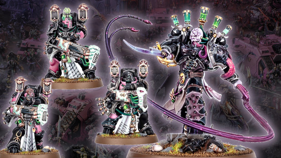
Emperor's Children
As of February 2025, we have a brand new Warhammer 40k army on the block (or at least one that has never before been its own standalone force, with dedicated plastic minis and a codex): the Emperor's Children, Chaos Space Marines devoted to the pleasure god Slaanesh.
The newest independent, themed chaos marine army, these twisted, sadistic warriors were once the loyal third legion Astartes - such proud servants of the Emperor that they were the only marines allowed to bear his name in their title, and wear his full imperial eagle on their armor.
But that was before they, and their primarch Fulgrim, fell to the service of Slaanesh, becoming the crazed and grotesque psychopaths they are now: creatures of the warp, obsessed with excess, depravity, and a doomed quest for extreme sensations of every kind.
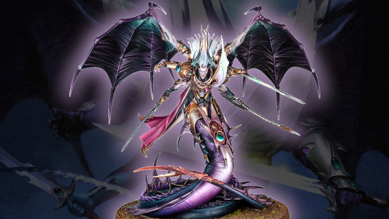
How do they play?
The Emperor's Children are all about speed, unbridled aggression, and flexibility in hand-to-hand combat, with lots of sneaky tricks up their sleeves (which are probably made of human skin).
The sabre-toting Infractor squads and terrifying elite duelists of the Flawless Blades can rush up the board at incredible speed, backed up by firepower from the more traditional, bolter armed Tormentor marines and the ECs' iconic unit: the bizarre Noise Marines. These guys carry sonic blasters that use warp tech to weaponize sound, shooting screams and booms that eviscerate targets inside their armor. The daemon primarch Fulgrim is a dervish of destruction, though - at launch - he's a little underpowered for his points cost at the highest level of competition.
Check out our Emperor's Children codex review to learn all about these arch-deviants!
Death Guard
One of three standalone, specialized Chaos Space Marine armies, the Death Guard are a traitor Space Marine legion sworn to serve Nurgle, the chaos god of disease, decay, and entropy. During the Horus Heresy, the primarch Mortarion, lord of the Death Guard, made a desperate bargain for his legion's survival - but in the process doomed them all to eternal servitude to the plaguefather.
In the 40k era, every last Death Guard Chaos Space Marine is a walking vector of the plague god's disease, riddled with every infection imaginable and kept alive only by Nurgle's otherworldly magic.
How do they play?
Death Guard are slow, hardy, and spread a debilitating aura of plague across the battlefield that weakens their enemies. Their infantry are incredibly hardy, from the hordes of shambling Poxwalker zombies through the ranks of the Plague Marines, and then into their foul and bloated elite Terminators.
Their foot soldiers specialize in close range firepower and brutal melee weapons. They are supported by vehicles and daemons engines with greater ranged firepower and a more rapid advance. Some Death Guard armies are even accompanied by daemonic allies, from towering Great Unclean Ones down to tiny giggling Nurglings.
If Mortarion's diseased legion appeals to you, our Death Guard army guide goes deep into their lore, and our review of the most recent Death Guard Codex explains all the foul things they're capable of.
World Eaters
The World Eaters are devoted to the Blood God Khorne, a deity with very simple tastes - blood and skulls, and it doesn't matter where they come from. The World Eaters charge into the fray with murderous abandon, uncaring if they live or die; Khorne cares not from whence the blood flows.
The World Eaters were barely restrained barbarians before they fell to Chaos, and it didn't take much to push them into the service of the ruinous powers. There's a real tragedy at their heart, the unresolved trauma of their Primarch Angron who neither wanted nor accepted them - but that's been drowned under oceans of blood.
How do they play?
The centre of most World Eaters' armies is a mass of ultra-violent melee infantry that can move across the table with frightning speed. Khorne Berzerkers, frothing lunatics who exceed the might of ordinary Space Marines with the blessings of their god, are the iconic core of the World Eaters.
Mortal Jakhal cultists serve as cannon fodder or to hold objectives, while the elite Eightbound and even more terrifying Exalted Eightbound can rip apart nearly anything they touch, thanks to the eight daemons they're each possessed by.
Angron is the centerpiece of a World Eaters army, a wrecking ball of ultraviolence. Unlike other centerpiece models, he has a passable chance of surviving the inevitable barrage of fire your opponent will send at him, because the World Eaters' Blessings of Khorne rules allow them to resummon him after he gets shot to pieces.
The World Eaters disdain sorcery and don't have any Psykers, but they do have a surprising number of ranged support units. They can field many of the same tanks and daemon engines as regular Chaos Space Marines, turbo charged for maximum aggression: their vehicles are faster, shoot less accurately, and fire a lot more shots at close rage
Can't resist your rage any longer? Our World Eaters army guide will fill you in on their gory lore, while our World Eaters Codex review covers their most recent rules.
Thousand Sons
The sorcerous Thousand Sons were the first traitor Space Marine legion to receive an independent model range. Aligned with Tzeentch, chaos god of change, fate, and deception, the Thousand Sons are amongst the most powerful Warhammer 40k psykers - esoteric wizards driven by an insatiable desire for knowledge and deep understanding of the universe.
Though initially loyal to the Imperium, a series of tragic, well-intentioned mistakes by their primarch Magnus the Red during the Horus Heresy dragged the Thousand Sons into the clutches of chaos. Since then, they've pursued their own ineffable plots and quests across the galaxy, but always in opposition to the Emperor and his servants.
How do they play?
On the table, Thousand Sons armies center on squads of Rubric Marines - empty suits of Space Marine power armor animated by chaos magic - supported by powerful chaos sorcerer marines, daemon engines, chaos animal-human mutants called Tzaangor, and - of course - daemons of Tzeentch.
Their biggest strategic strength is in their psychic abilities, so watch out for opponents with strong counters to that - primarily other psychic-heavy armies like Aeldari, and especially weapons with the Anti-Psyker 40k ability.
Itching to be inducted into the mysteries of the Warp? Learn the sorcerous ropes with our full Thousand Sons army guide.
Chaos Daemons
Abominations spawned from the Warp (Warhammer 40k's ever-present, terrifying parallel dimension) Chaos Daemons are a diverse horde of bizarrely-shaped, multi-colored creatures that are technically just protrusions into our universe of the Warp's ethereal forces. They're entities formed by the will of the four chaos gods - Khorne, Nurgle, Tzeentch, and Slaanesh - with the objective of wreaking havoc in the real world.
Chaos Daemons can fight as allies to the Heretic Astartes or Chaos Knights, but they're an army in their own right - with flexible rules that allow you to create forces allied to any one of the four gods, or a mixture of more than one. Each god commands a range of lesser daemons - small, large, fast, slow, some winged, some riding giant snails - and highly dangerous greater daemons like Nurgle's Great Unclean Ones.
How do they play?
As befits their bewildering diversity, Chaos Daemons armies can function in all kinds of ways on the tabletop battlefield, but pretty much all rely on close-range combat to get their killing done; whether it be via Slaanesh's impossibly fast Daemonettes, the furious melee attacks of Khorne Bloodletters, or Nurgle's Plaguebearers and their infuriating unwillingness to take damage.
Check out our full Chaos Daemons guide to learn all the army's most fearsome, cursed secrets.
Chaos Knights
Just as the Adeptus Astartes have their traitor counterparts, the Chaos Knights are the heretical mirror of Imperial Knights: these are the mech-warriors from the Knightly Houses who sided with the warmaster Horus Lupercal during the Horus Heresy, and never looked back (plus a few others who turned to chaos in the following ten thousand years).
Piloting largely the same type of walking war machine as the loyalists, and wielding similar weapons, the Chaos Knight models are set apart mainly by the Warp-touched details in their armor and equipment, and by their more sinister livery and decorations (think skulls, chains, and screaming faces replacing colorful flags and emblems). They have different unit names, too - with beast-faced War Dogs taking the place of Imperial Armiger-class knights, for example.
How do they play?
On the tabletop, Chaos Knights play similarly to the Imperials in many ways - but they're less restrained and more aggressive. Their main unique mechanic is Harbingers of Dread, terrifying their foes and granting you bonuses that help you to snack on enemies as they succumb to battle-shock.
Want to command your own lance of fear-inducing hell robots? We spoke to Team Sweden's Björn Eriksson to learn how he commands his fallen household in this interview.
Orks
The Orks are an interesting contradiction of a Warhammer 40k faction: they are at once a truly scary, unstoppable force of pure, unfettered destruction - and the primary source of comic relief in an otherwise dour and serious sci-fi setting.
Massive, muscled, green aliens with huge teeth, axes, guns, and egos, the Orks are a race that lives exclusively to do three things: fight, fight, and reproduce (which they do primarily by fighting). The Orks take over planets by force, enslaving the populations to make more weapons for them (or just to eat). In the process they will seed the planet with their fungal spores, which grow into more Orks, which spread to more planets, and so on.
Orks don't actually want anything, except more fighting, and - though they're easily outsmarted or outmaneuvered individually - they're devastating in large numbers, and multiply incredibly quickly. As a result, they're an implacable and almost invincible foe to the other races of the galaxy.
How do they play?
On the tabletop, Orks are one of the classic Warhammer 40k armies - an unstoppable green tide of lowly, axe-wielding Boyz, backed up by squadrons of ramshackle, scrap-built vehicles; crowds of impish little Grots; and, of course, mighty Warbosses (who lead their armies by dint of being bigger and stronger).
Collecting and playing Orks takes time and commitment (you'll have a LOT of Boyz to paint) but it's an ever popular army, with much joy to be found in roaring "Waaagh!" across the table.
And you can lean into one of the different obsessions that Orks find themselves possessed with, whether that's a walker-packed Dread Mob, a bike and buggy stuffed Kult of Speed, or traditionalist, squig-riding Orks taking part in Da Big Hunt.
For all the info needed to become Big Boss of your own apocalyptic Green Tide, check out our complete Orks army guide.
Aeldari
The Aeldari (previously known as Eldar) are - let's not beat around the bush - space elves. Tall and willowy; long-lived and wise; pointy-eared and full of poise; proud guardians of a once great but now withered empire - they are a direct sci-fi analogue of the Eldar in J.R.R. Tolkien's Lord of the Rings.
That's not to say they're not a deep and compelling Warhammer 40k faction; the collapse of their erstwhile empire was so cataclysmic, it gave birth to the chaos god Slaanesh, and that's just the tip of the Eldar lore iceberg.
In the 40k era, the Aeldari are splintered into several distinct cultures. The Drukhari get a complete section of this guide later on, but we'll describe the others here.
Asuryani
Asuryani (pronounced ahh-suh-ree-yah-nee) is a cultural shorthand for the Craftworld-dwelling Aeldari - as distinguished from the mysterious Harlequins, the outcasts and corsairs, and their twisted Drukhari cousins.
The name comes from the Phoenix King Asuryan, father and chief of the Aeldari gods, and brother to Kaela Mensha Khaine, the Eldar god of war. They Asuryani live on colossal, spacefaring civilisation-ships that house not only the living, but crystals holding the souls of all their dead. They live a nomadic existence, traversing the galaxy and trying to outrun their fate.
Harlequins
Harlequins are one of the weirdest minor 40k factions: a very small, very secretive sect of mystical Aeldari warrior-performers who worship the Eldar deity Cegorach - the Laughing God. Their sacred task is to protect the Black Library, an ancient repository of Eldar history, knowledge, science, and dark secrets hidden deep within the interdimensional Webway.
In battle, Harlequins wear extravagant, vibrantly colored and patterned costumes, and strange, grinning masks. They fight with supernatural grace, speed, and surety, with lightning reflexes and acrobatic maneuvers key to a Harlequin victory - after all, wearing no armor gets you killed unless you're a real smooth mover.
In tabletop Warhammer 40k, the Harlequins have functioned differently at different times - sometimes with their own full codex. In 10th Edition, Harlequins have been fully rolled into the main Aeldari index army list.
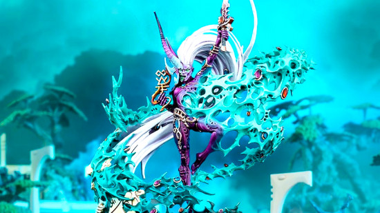
Ynnari
The Ynnari are a slightly confusing crossover sub-faction of the different Eldar armies - a revolutionary religious and political force that counts Craftworld Aeldari, Drukhari, and Harlequins among its adherents and warriors.
The name comes from Ynnead - the Aeldari god of the dead - whom the Ynnari believe they can reawaken in the material universe, in order to defeat the Chaos god Slaanesh and release his/her/their historic claim upon the souls of the Eldar species.
At the close of 7th Edition and dawn of 8th Edition Warhammer 40k, in 2017, the actions of the Ynnari and their leaders - Yvraine, the Visarch, and the Yncarne - were central to the main narrative storyline, although their importance has waned significantly since, with the ongoing relevance and activity of the Ynnari shrouded in some mystery.
How do they play?
While their numbers are a tiny fraction of what they were, the Aeldari can still field mighty warhosts, made up of both living warriors and war machines piloted by the sentient, crystal-bound souls of their ancestors.
On the tabletop, the various warhosts fight very differently depending on their Craftworld - from the speed-obsessed Windrider Jetbikes of Saim-Hann to the powerful psychic Farseers and Warlocks of Ulthwé.
Aeldari are slightly built and mostly lightly armored, so your units will always be somewhat vulnerable - but they make up for it with powerful wargear and force-multiplying abilities. The Eldar were the most powerful faction in Warhammer 40k 10th edition when it launched, and - although several balance updates have blunted their edge somewhat - they remain one of the strongest armies in the game.
Raising a noble Aeldari warhost of your own is a glorious undertaking - get all the guidance you need in our full Eldar army guide.
Drukhari
Depraved, sadistic raiders, slavers, and torturers, the Drukhari (previously known as Dark Eldar) fled the destruction of the ancient Aeldari empire, and, ironically, survived by building a culture based on the very dark perversions that brought the Eldar to ruin in the first place. They closely resemble their Aeldari cousins, but tend to wear darker, spikier clothes and armor, as befits their sinister nature.
Drukhari can only sustain their souls by directly feeding off the pain and suffering of others; they literally live by torturing people. As a result, they are a civilisation that runs on a steady diet of slaves, taken in constant piratical raids from anyone and everyone they can reach from their hidden city of Commorragh.
How do they play?
On the tabletop, the Drukhari are one of the fastest Warhammer 40k armies around, relying on their nippy flying gunboats to get right into the fight as soon as the game begins. Kabalite Warriors can fire freely from the open backs, while packs of drug-fueled Wyches leap off to carve enemies up in close combat.
When necessary, these shock troops get backup from the horrific flesh-constructs of the Haemonculus Covens: patchwork warriors sewn together from bits of various unfortunate test subjects.
If you can't wait to launch bloodthirsty raiding parties of your own, read our complete Drukhari army guide for more info - and make sure you check out our interview with the consummate Drukhari master Archon Skari.
Necrons
The ancient Egypt-inspired Necrons are technically both the oldest and most powerful of the Warhammer 40k factions. A race of cybernetic beings encased in immortal bodies of self-repairing living metal, their empire once spanned the entire galaxy. Getting to that point involved making some very bad deals with some very bad elder-entities known as the C'tan, which is how they came by their shiny metal bodies.
The C'tan didn't mention the part of the "immortality" deal in which they would eat the Necron's souls, so once the Necrons were finished pummelling all other galactic rivals, they went and blew up the C'tan. After that their entire civilisation went to have a nap in AI-controlled stasis crypts for about 60 million years.
Fast forward to the 40k era, the all-powerful Necron dynasties are waking back up, and they are awfully cranky about all the upstart races that have taken over all their territory.
Billions of soulless Necron warriors (along with their royal leaders and swathes of Canoptek machine servants) are reawakening from stasis all over the galaxy and taking back their old worlds by force. Most recently, Szarekh the Silent King, supreme ruler of all Necrons, has returned to lead them.
How do they play?
In games of Warhammer 40k, Necrons are a slow but resilient force, and, while most of their weapons have medium range, once they get up close they'll blast most targets to atoms with little effort. Keep your royal Overlords protected, and make good use of the Reanimation Protocols rule to revive your lowly Necron Warriors whenever they fall, and your living metal legions will reliably frustrate and destroy your opponents.
Your legions awake; a thousand Tomb Worlds full of metal soldiers await your command - read our full Necrons army guide to get started.
Tyranids
The Tyranids are the great unknown among the Warhammer 40k factions - known as the Great Devourer, these scythe-limbed insectoid monsters only want one thing: to feast on every single living creature in the galaxy, until nothing remains. Encroaching from the great black beyond the galaxy's edge, the Tyranid Hive Fleets are creeping further and further across it, consuming biomass and breeding as they go.
Made up of a huge diversity of different bio-forms, from swarms of tiny Rippers up to mountain-sized Hierophant Bio-Titans, Tyranids seed planets with their spore pods before raining down numberless hordes of warrior beasts to engulf, overwhelm, and devour whatever life called those places home. They cannot be negotiated with, and - so it seems - cannot be stopped, only slowed in their advance.
How do they play?
Tabletop Tyranids armies can be made up of just a few big monsters - but more usually you'll see Tyranid players field larger hordes made from scores of deadly bugs, including swarms of organic gun-toting Termagants and razor-armed Hormagaunts, raving packs of four-armed Genestealers, and hulking Tyranid Warriors. Their one weakness? Tyranids rely on their Hive Mind - and its Synapse links - for their greatest strengths; separate the swarm from its leaders, and the rest of the bugs are much easier to squash.
Tyranids were the recipients of the first Codex army book for Warhammer 40k 10th edition, which you'll need if you want to get access to all their rules.
Want to consume the entire galaxy at the head of a murderous Hive Fleet of your own? Read our complete Tyranids army guide to find out how.
T'au Empire
The T'au Empire is a growing conglomerate of alien species united by an idealistic vision of galactic expansion through diplomacy. One of the youngest Warhammer 40k races, the slender, blue-skinned T'au - led by their rigid ruling caste of Ethereals - are unusual, in that they don't always default to achieving their goals through warfare.
That said, the Empire's ethos of peaceful expansionism is always backed up by the threat of war, made manifest in its warlike fire caste and their armory of devastating, high-tech guns. If a world doesn't want to join the T'au's utopian project freely, it will usually be persuaded otherwise with overwhelming force.
What the T'au lack in numbers and territory, they more than make up for in martial skill and superior weapons tech; a small force of pulse rifle-armed T'au Fire Warriors, advanced Crisis Battlesuits, and Stealth-suit infiltration squads can often outgun far larger opponents with ease.
How do they play?
On the Warhammer 40k tabletop, T'au armies are extremely dynamic, using extremely maneuverable battlesuits, light vehicles, and transports to project force wherever they want to, in ways that your opponent has very little ability to avoid. If you like flexible strategy, high-tech mech suits, big guns, and anime, this is the 40k faction for you. If you want to learn more about the T'au way of war, check out our interview with world class T'au player Durante 'Glynisir' Bozzini where he breaks down what you've got to understand to get the most from the faction.
Genestealer Cults
One of the newest Warhammer 40k factions on the tabletop (though they've been part of the lore since the start), the Genestealer Cults are an army of genetic bodysnatchers, insidious outriders of the Tyranid Hive Fleets. Most members of this faction look like normal humans - workers, miners, farmers, guards - but are in fact alien hybrids, slowly infecting the population on behalf of their unseen Tyranid masters.
Tyranid Genestealers sneak onto inhabited planets and implant their DNA into living subjects. When these infected individuals reproduce, they'll give rise to Genestealer hybrids. Once enough people have been converted, they form underground cults that worship the 'star children' and begin to foment unrest and destabilise the planet - softening it up for the coming Tyranid invasion.
How do they play?
As a tabletop Warhammer 40k army, Genestealer Cults are a relentless horde: when their units die there's a very good chance that they'll return to play, creeping up behind your enemy after they've incautiously advanced towards your lines.
In keeping with their theme of being a covert force embedded as ordinary workers, the Cults' basic troops are lightly armed and armored, not much threat on their own. Those who are in the more Genestealer-y stages of mutation are more dangerous, however - and fully transformed Purestrain Genestealers are just as deadly as their full-on Tyranid cousins.
If you want to know how that translates into victory for the many-armed revolutionaries, check out our interview with world-class tournament player Innes Wilson, a true master of the xenocult uprising.
Leagues of Votann
The newest Warhammer 40k faction - released by Games Workshop in September 2022 - the Leagues of Votann are a reimagining of the original Squats (space dwarfs) from the game's first edition in 1987.
Given a heavy dose of grimdark seriousness to dilute the original Squats' beardy silliness, these stout, sour-tempered warriors are highly dangerous, packing some of the galaxy's deadliest weapons. So powerful were they, in fact, that GW nerfed the faction before it had even properly released - in the latest edition of the game they're a lot more tame.
The Leagues of Votann - who call themselves 'The Kin' - live in the perilous galactic core region, routinely avoided by the other 40k races due to its many dangers to ships passing through. A clone race, they closely guard the technological secrets of their survival, and - though they did originally come from Terra - have no love for humanity or its Imperium.
They mainly spend their time mining stars and planets for rare ore, and trading with other races whenever they can see profit in it. Though not inherently warlike, the Kin see any valuable territory or materials as rightfully theirs for the taking, and don't hesitate to blast anyone who'll stand between them and a profitable mining prospect. True space dwarfs indeed.
How do they play?
Votann have some of the best technology available to the (post) human species. Their Hearthkyn warriors and turtle-shelled Einhyr Hearthguard elites can flex into various roles thanks to a good choice of potent guns; and they've got very solid vehicles to ferry troops around, providing withering heavy weapons fire.
The Eye of the Ancestors rule reflects their cantankerous nature - when an enemy unit destroys one of your units, it gets easier for your entire force to hit and to wound that enemy. They took a bit of a battering at the start of 10th edition 40k, becoming one of the game's weaker armies, and, while they've received some substantial buffs since, their lack of effective board control remains a big weakness.
For full details on the Kin and their galaxy-beating armory, check out our complete Leagues of Votann army guide.
Imperial Agents
As of August 2024, Warhammer 40k 10th edition has created a new official faction and standalone codex rulebook for the Imperial Agents - previously known as Agents of the Imperium, a blanket term for a large variety of Imperium miniatures that people own, love, and want to play with, but don't fit directly into one of the main tabletop armies.
There were already rules in 10th and previous editions to 'ally in' specialist warriors like Inquisitors and Assassins as reinforcements to other Imperial armies - but the new 2024 codex allows you to run a complete army of Imperial Agents, drawn from various minor factions, for a highly characterful tabletop army.
This might include squads of specialist Deathwatch or Grey Knights Space Marines, strike teams of Inquisitors and their acolytes, and even sequestered Sisters of Battle.
How do they play?
The makeup of Imperial Agents armies can be so diverse that it's hard to pin them down to one playstyle - how your army will play depends on which combinations of units and detachments you choose. That said, you can count on an Imperial Agents army being quite complex to run, with a high skill level required.
The main advantage here is more on the narrative side: giving you a chance to field an army filled with awesome characters not normally seen on the tabletop.
Here's a few of the minor faction groups now united under the Imperial Agents banner:
The Inquisition
The Inquisition is a functionally independent and all-powerful branch of the Imperial government - basically a universally feared secret police that sits above the law - whose job is to fight 'unorthodox' enemies outside and inside humanity's borders.
The Inquisition is split into several different "holy Ordos". The largest of these are the Ordo Hereticus, concerned with religious corruption within the Imperium, the Ordo Malleus, specializing in daemon hunting, and the Ordo Xenos, experts at dealing with alien threats. All are incredibly powerful, and all can command some of the most esoteric and dangerous weaponry in the galaxy.
For complete details, read our unredacted Warhammer 40k Inquisition guide.
Officio Assassinorum
The Emperor's own sanctioned, official assassins, the elite 'temples' of the Officio Assassinorum train deadly specialized killers and send them out to efficiently destroy specific individuals that the Imperial government would prefer to disappear.
There are many temples: four of them have models on the tabletop:
- Vindicare assassins excel at long-range sniper shots;
- Callidus assassins move and cut throats with impossible speed, stealth, and acrobatics, and uniquely can use the shapeshifting drug known as Molymorphine;
- Culexus assassins are psychic nulls whose powers are amplified by the Animus Speculum to melt the minds of Psykers;
- Eversor assassins are biological weapons, berserk killing machines that aren't so much given missions as they are 'activated';
- Venenum assassins are poisoners without compare;
- Vanus assassins hack information systems, manipulate data, and engineer untraceable kills;
- Adamus assassins are prototypical ninjas.
In tabletop armies, one or two of these vulnerable, but highly powerful characters can add huge strategic value to your force. Irritatingly, their rules are in the Imperial Agents codex, so if you want to unlock them in the app, you have to buy a whole extra book.
For more info, read our full guide to Warhammer 40k assassins.
Adeptus Arbites
The Adeptus Arbites is the Imperium's galaxy-wide paramilitary police force, responsible for enforcing Imperial law with an iron fist and a big shotgun. Arbites officers look, sound, and act exactly like Judge Dredd, and that is in no way an accident - the early Warhammer 40k authors and designers were all avid readers of the comic 2000AD.
Unlike Dredd, Arbites are more like a special task that deals principally with political crime: they enforce the Lex Imperialis, the law that binds the worlds and agencies of the Imperium together, rather than the mundane planetary law that is the concern of planetary governments and their enforcers.
The Arbites got official tabletop models for the first time in the February 2023 Soulshackle box set for Warhammer 40k Kill Team - but you can get the Arbites Exaction squad minis separately now, and use them in full 40k games using the Agents of the Imperium rules.
Imperial Navy
The Imperial Navy is a massively important miliary arm of the Imperium, tasked with defending the space lanes, ferrying innumerable military forces between warzones, and fighting back the massive fleets of the Xenos and the Heretic. It also shows up in a limited fashion in 40k. Imperial Navy Breachers can be fielded in an Imperial Agents army or as allies in other Imperial forces. And almost all the air vehicles employed alongside Astra Militarum forces are actually under the control of the Imperial Navy.
If you want to know more about the Imperial Navy, your best bet these days is the Warhammer 40k game Battlefleet Gothic II.
Minor Warhammer 40k factions
While those above are the main, distinctive, playable tabletop armies in Warhammer 40k, there are countless other minor Warhammer 40k factions, sub-factions, and looser groupings referred to in game rules, Warhammer 40k books, and across the setting - we'll briefly explain just the most relevant ones here.
Collegia Titanica
The Collegia Titanica is an incredibly ancient sub-faction of the Adeptus Mechanicus, whose role is to maintain and pilot Warhammer 40k Titans in war - colossal walking war machines that can level cities in moments.
In tabletop Warhammer 40k, titans are the size of toddlers, extremely expensive Forge World resin models that are very rarely seen on the tabletop - partly for those reasons, and partly because, for rules purposes, each one costs roughly twice the points of a normal full army. If you want to field an army of Titans, much smaller plastic models, and can be used in either the massed army game Legions Imperialis, or the Titan-only wargame Adeptus Titanicus.
Aeronautica Imperialis
The Imperial Air Force, or Aeronautica Imperialis, is a major sub-faction of the Imperial Navy devoted to 'atmospheric' aerial combat and support operations. It's a force of high-tech aeroplanes and other aircraft primarily used by Imperial forces to provide air support for armies on planets, rather than in space.
Aeronautica pilots fly sorties in various aircraft types depending on the nature of the mission, from close air support, to tactical bombing, to supply transport. Two of the most commonly seen are the Lightning fighter and Marauder bomber, both of which are capable of limited space flight, so can launch their sorties from void ships in orbit of the target planet.
Aesthetically and organizationally, the way Aeronautica pilots and aircraft are depicted is strongly influenced by those of airmen and women flying during World War Two - especially the British Royal Air Force - but the 40k backdrop gives them some extra character.
If you want to get hyped for these fly-boys and girls, we can strongly recommend Dan Abnett's 2019 novel Double Eagle - a brilliant military thriller that puts you right in the cockpit. The 2024 sequel, Interceptor City, is just as good, delving deep into the psychological turmoil experienced by pilots operating at the very edge of human capabilities.
The Imperial Air Force also lends its name to Games Workshop's recent spin-off miniatures game Warhammer 40k Aeronautica Imperialis, which has you pit squadrons of Imperial, Chaos, and Xenos aircraft minis against each other in dogfights over a hex grid board. Sadly, it's phased out due to low sales - but many of its fantastic plane models are now usable in the epic-scale Horus Heresy wargame Legions Imperialis.
Adeptus Astra Telepathica
The secretive Adeptus Astra Telepathica - also called simply the Astra Telepathica - is a subfaction of the Imperium dedicated to seeking out, assessing, and 'processing' latent human 40k psykers (psychically active individuals) all over the galaxy.
The Astra Telepathica was founded shortly after the construction of the Astronomican - the Emperor's vast psychic navigational beacon - with two main purposes: finding and recruiting psychic individuals to serve the Imperium as 'sanctioned psykers', and eliminating latent psykers whose vulnerability to the warp made put them at high risk of Chaos corruption.
Of particular value were those sanctioned psykers capable of becoming astropaths (astro-telepaths): specialists in using their psychic connection to the warp to communicate telepathic messages over vast distances. Astropaths (often working in groups known as astropathic choirs) were essential to the Emperor's Great Crusade, allowing the hundreds of expeditionary fleets to communicate orders and strategic intelligence from opposite ends of the galaxy.
From the very start, however, the Astra Telepathica had a dark side. The League of Blackships was (and remains) responsible for touring the Imperium and forcibly abducting every human psyker they find, before returning them to Terra for assessment - now done in the Scholastica Psykana.
In the 41st millennium, the fate of such psykers is bleak. The high potential candidates are trained and indoctrinated into various roles in service of the Imperium, most of which are horrifically dangerous in their own right. But those judged too weak or dangerous are instead sacrificed to the Emperor's golden throne, their lives and souls devoured by the machine that both powers the Astronomican, and keeps the ancient ruler in his perpetual state of half-life.
Dark Mechanicum
The Dark Mechanicum (also called Dark Mechanicus) is to the Adeptus Mechanicus, as the Chaos Space Marines are to the Space Marines, or the Chaos Knights to the Imperial Knights. It's the name given to AdMech tech-priests, war machines, Skitarii, and even titans who have abandoned the Imperium and the Omnissiah and thrown their lot in with Chaos.
During the Horus Heresy, a huge part of the Mechanicum - led by the power hungry Fabricator General of Mars Kelbor Hal - pledged itself to Horus Lupercal. They were entranced by the possibilities of infusing their material technologies with the immeasurable, unpredictable twisting powers of the Warp. The result was 'hereteks' - corrupted Mechanicum tech priests, adept at creating terrifying warp-addled war machines and daemon engines.
Games Workshop has started to release models for the Dark Mechanicum in the Horus Heresy era - a couple of special characters for the Heresy Heresy wargame, and a larger force of spiderlike abominable intelligences for the small scale Legions Imperialis wargame.
Minor xenos factions
In spite of the Imperium's tireless efforts to exterminate them over the last 11,000 years or so, Games Workshop's Warhammer 40k galaxy is absolutely stuffed with minor xenos species, far beyond the paltry eight xenos factions that have playable codexes and models.
Some of the ones we know most about were civilizations encountered and later obliterated by the Space Marines during the Great Crusade, like the Laer - chaos worshipping reptilian creatures whose warp technology helped corrupt Fulgrim and his legion - and Megarachnids - a Tyranid like insectoid swarm species wiped out by the Blood Angels and Emperor's Children. Others, like the Kroot and Vespid, have been absorbed into the T'au Empire as alien auxiliaries.
Here are a few of the most famous smaller alien factions still nominally alive and well in the galaxy that aren't currently playable - but might be in the future.
Zoats
High-tech crocodilian centaur creatures, the Zoats are thought to have originally been created and bred by the Tyranid hive fleets, as a kind of ambassador race meant to lay groundwork for Tyranid expansion.
They later evolved to resist the control of the Hive Mind, and are now something of a mystery race, with fans constantly speculating that they could be the next big xenos army to join the tabletop game. One model appeared in Warhammer Quest: Blackstone Fortress, and has since been rereleased as a boss enemy for Kill Team.
Hrud
The Hrud are a loosely humanoid, but extremely flexible, long limbed, darkness dwelling species whose unique connection with the warp gives them the ability to accelerate the ageing of life forms they come into contact with - they can also remain conscious while locked in a stasis field.
Correctly deemed highly dangerous by the Imperium, Perturabo and the Iron Warriors legion fought a long and extremely costly campaign to wipe them out, but the Hrud are still at large in the galaxy. They live in large warrens - Trazyn the Infinite keeps one in stasis in his gallery at Solemnace.
Jokaero
The Jokaero are a highly intelligent alien race that closely resemble the Orangutans of old Earth, but were probably engineered by the ancient, godlike race called the Old Ones (who also created the Aeldari and the Krork, ancestors of the Orks, among other species).
They're best known for being ridiculously good at crafting and repairing technology using whatever materials they have to hand - far beyond anything even Adeptus Mechanicus tech-priests can manage.
Such creative scientific and engineering exploits would be considered heresy by most parts of the Imperium of Man - but Inquisitors are bound by no such rules, and sometimes recruit Jokaero Weaponsmiths into their entourages.
Tarellian Dog Soldiers
Despite being canonically quite widespread and populous across the galaxy, the Tarellian xenos race have been unrepresented in Games Workshop's tabletop 40k miniatures until very recently.
Nicknamed "dog soldiers" by the human Imperium on account of their elongated faces, snapping jaws, and barking voices, the Tarellians are famed mercenaries who've fought the Imperium alongside Chaos forces multiple times.
There's only one Tarellian named character in current 40k lore, and that's The Enforcer - a bounty hunter in the employ of famed Chaos pirate Huron Blackheart and his Red Corsairs. When her model was revealed in January 2026, xenos fans got excited about another alien species joining the tabletop - but no further Tarellians have appeared since, and her lackluster game rules left some players downhearted.
Enslavers
Enslavers are a strange warp-borne xenos species - not daemons, but capable of surviving transit through the warp. They are an apocalyptic threat, and - in older versions of Necron lore - it was a plague of Enslaver incursions that forced the C'tan and their Necron servants to go into stasis at the end of the war in heaven.
Enslavers are capable of interstellar travel by harnessing the minds of unprotected psykers. The first psyker possessed like this is transformed bodily into a gateway through which the Enslavers can pass. From here they will gradually enslave the population of a planet. Whether Enslavers are intelligent or not is hard to say, for they have never communicated with humans, but they are unquestionably dangerous.
What will be the next new Warhammer 40k faction?
We predict the next distinct, playable faction Games Workshop will add to Warhammer 40k will be the Dark Mechanicum. Games Workshop hasn't officially confirmed it, and we have no secret information here - but we're making a reasoned prediction based on a couple of key factors.
First, this cabal of chaos aligned tech priests already has some models; GW released a selection of scuttling Dark Mechanicus stalker constructs for its epic scale wargame Horus Heresy: Legions Imperialis in 2024.
Fans have long remarked on the firm's tendency to 'test drive' potential new model ranges with limited releases in its smaller games, to gauge the level of interest and likely sales volumes, should they introduce the army wholesale into mainline Warhammer 40k (see also: the Leagues of Votann). The same could be true of the heretek forges.
Second, the Dark Mechanicum is canonically large, powerful, dangerous, influential, and important to major story events, providing the mechanical and logistical heft behind many of Chaos' biggest plots and offensives. It's arguably the most powerful faction in the current Warhammer 40,000 lore that doesn't have a tabletop army to play.
And third: people freaking love the Dark Mechanicum. Fans have been kitbashing evil tech priest armies like mad ever since GW released the regular AdMech model range in 2015; for a taste of just how indescribably rad those models can look, check out Tabletop Tactics' incredible custom army in the video above. Honestly, the primary fan response to those Legions Imperialis spider tanks was 'wow, these are cool - why can't I play them in 40k?'
If they're coming, we expect them to be a ways off, arriving in late 2026 at the very earliest. But then, the Leagues of Votann took us all by surprise, so anything's possible…
And that's all for our comprehensive guide to the Warhammer 40k armies so far! If you want to get a feel for the grim, dark 41st millennium without poring through more lore or rulebooks, check out our guides to the best Warhammer 40k games on PC and console, and the best Warhammer 40k books that can introduce you to the setting through thrilling stories and action.
Originally published on Wargamer.


Leave a Comment